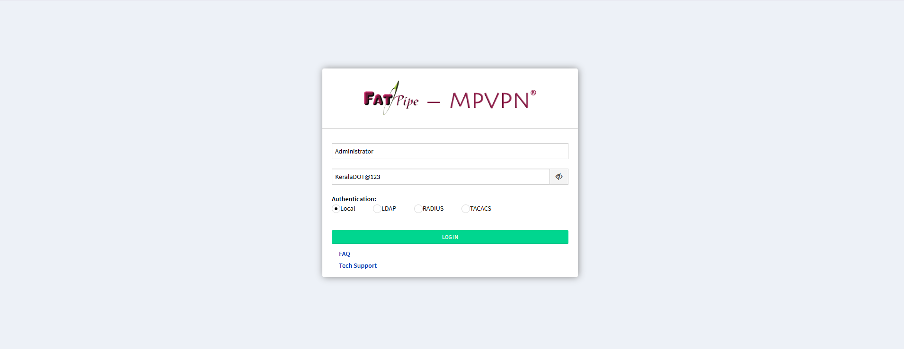
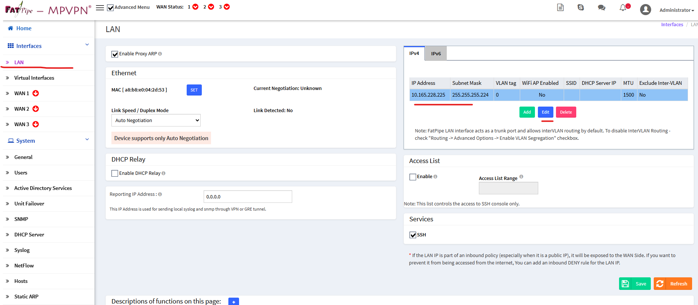
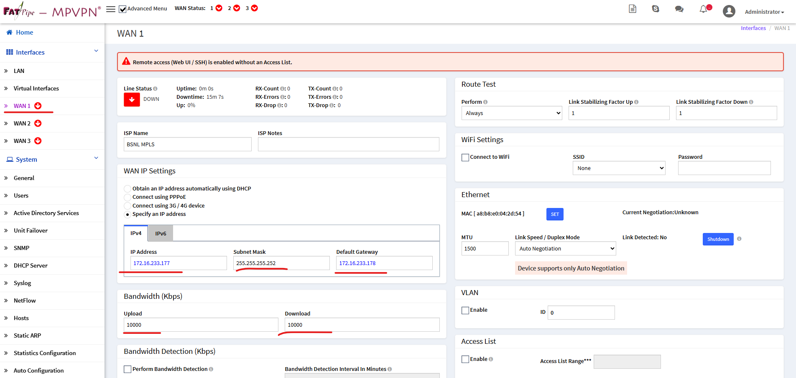
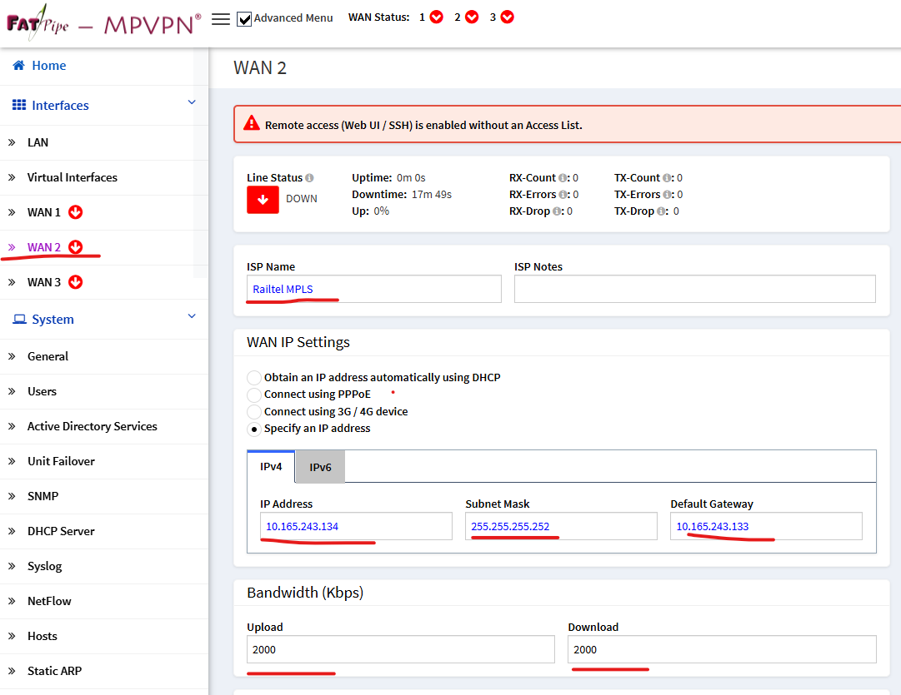
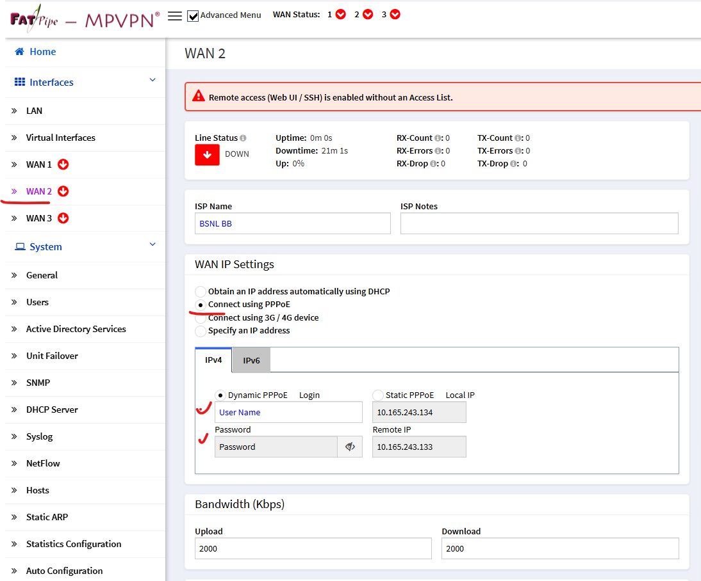
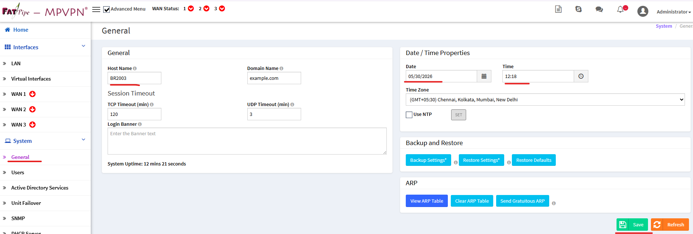
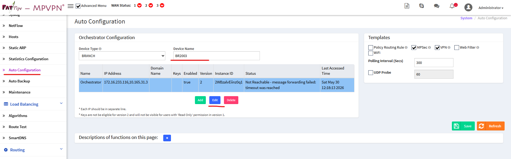
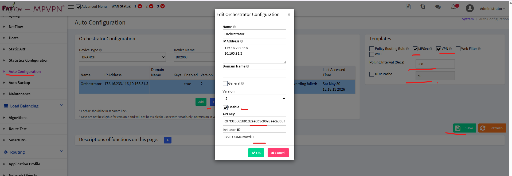
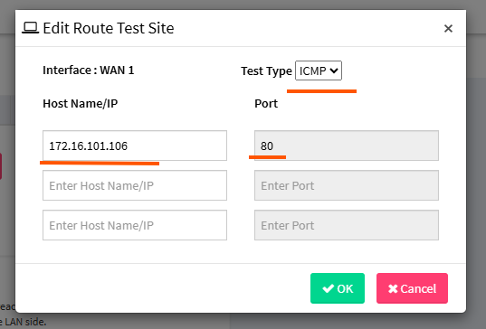

FatPipe MPVPN Branch Device Configuration Guide
Phase 1: Initial System & Physical Setup
Step 1: Configure the Local Management System IP
Before establishing a connection to the hardware, you must configure a static IP address on your management computer to ensure it resides on the same subnet as the default management interface of the FatPipe device.
- Action: Press Win + R on your keyboard to open the Run dialog box.
- Command: Type ncpa.cpl and hit enter to open Network Connections.
- Navigation: Right-click your active Ethernet adapter and choose Properties. Select Internet Protocol Version 4 (TCP/IPv4) and click Properties.
- IP Assignment: Click Advanced, select Add under the IP addresses section, and input the following parameters:
Step 2: Establish Physical Connectivity
- Connect a physical LAN cable from the network interface card (NIC) of your configured management system directly to Interface no. 4 on the FatPipe branch device.
Step 3: Access the Device Management Web UI
- Open a secure web browser and navigate to: https://192.168.3.2.
- Bypass Security Alert: Click on Advanced and select Proceed to bypass the self-signed SSL certificate warning.
- Authentication: Log in using the system administrator credentials:
- User Name: Administrator
- Password:
- Authentication Mode: Select the Local radio button.
- Click LOG IN.

Phase 2: Interface & Network Layer Configuration
Note: For all subsequent steps, make sure that the Advanced Menu checkbox at the very top of the interface layout is checked to expose full operational configurations.
Step 4: Configure Local Area Network (LAN) Settings
- Navigation: Look at the left-hand navigation pane, expand the Interfaces dropdown list, and click on LAN.
- Configuration: In the IPv4 data table on the right side of the screen, click the Edit button to modify the core local network setup:
- IP Address: 10.165.228.225
- Subnet Mask: 255.255.255.224
- Ensure "Enable Proxy ARP" and "SSH" under Services remain enabled as checked on the profile page.
- Click the Save button located at the bottom-right corner of the interface.

Step 5: Configure WAN 1 Interface (BSNL MPLS)
- Navigation: In the left navigation menu under Interfaces, select WAN 1.
- Profile Parameter Input: * ISP Name: Enter BSNL MPLS.
- WAN IP Settings: Select the radio button for Specify an IP address.
- IP Address: 172.16.233.177
- Subnet Mask: 255.255.255.252
- Default Gateway: 172.16.233.178
- Bandwidth (Kbps): Set Upload to 10000 and Download to 10000.

Step 6: Configure WAN 2 Interface (Scenario-Based)
Depending on your regional branch procurement, configure WAN 2 via one of the two options detailed below:
Option A: If WAN 2 utilizes a RailTel MPLS Circuit
- Navigation: Click on WAN 2 from the left-hand routing menu.
- Profile Parameter Input:
- ISP Name: Enter Railtel MPLS.
- WAN IP Settings: Select the radio button for Specify an IP address.
- IP Address: 10.165.243.134
- Subnet Mask: 255.255.255.252
- Default Gateway: 10.165.243.133
- Bandwidth (Kbps): Set Upload to 2000 and Download to 2000.

Option B: If WAN 2 utilizes a BSNL Broadband (BB) Connection
- Navigation: Click on WAN 2 from the left-hand interface menu.
- Profile Parameter Input:
- ISP Name: Enter BSNL BB.
- WAN IP Settings: Click the radio button for Connect using PPPoE.
- PPPoE Type: Check the Dynamic PPPoE option.
- Credentials: Provide the specific broadband connection User Name and Password into the respective text fields.
- Bandwidth (Kbps): Set Upload to 2000 and Download to 2000.

Phase 3: System Context & Central Orchestrator Pairing
Step 7: Define General System Properties
- Navigation: In the left navigation tree, expand the System dropdown block and select General.
- Identity Setup: In the Host Name input box, modify the identifier text field to your designated site code (e.g., BR2003).
- Temporal Setup: Under Date / Time Properties, configure your actual local tracking matrix:
- Date: Set to the deployment date (e.g., 05/30/2026).
- Time: Set to the current synchronization time (e.g., 12:18).
- Time Zone: Select (GMT+05:30) Chennai, Kolkata, Mumbai, New Delhi.

Step 8: Bind Device to the Central SD-WAN Orchestrator
- Navigation: Move down the System menu tree and click on Auto Configuration.
- Orchestrator Selection: In the main dashboard table, verify that your Device Name shows your hostname (e.g., BR2003). Highlight the Orchestrator entry line row and click the Edit button.

- Pop-Up Configuration Window: In the "Edit Orchestrator Configuration" modal overlay box, input the system keys:
- IP Address: Input both orchestration tracking hub destinations on separate lines:
- Version: Select 2 from the dropdown selector.
- Enable Flag: Check the Enable checkbox.
- API Key: Provide the central security tracking token string (e.g., c97f3c6661b91d2ae0b3c9093aeca3651).
- Instance ID: Enter the specific structural node token assigned to your office (e.g., BSLLOOMOIwwrl1T).
- Under the global Templates panel on the right side of the primary layout page, verify that both MPSec and VPN checkboxes are explicitly checked. Ensure the Polling Interval (Secs) value is dialed to 300 and the UDP Probe window is set to 60.
- Click OK on the modal window, then click Save on the primary interface.

Phase 4: Path Monitoring & Route Verification
Step 9: Configure Live WAN Route Testing Parameters
- Navigation: In the left panel, locate and expand the Routing or Load Balancing category option and select Route Test.
- Edit Gateways: Find the WAN Route Test Sites data array table located near the bottom of the page. Select your active interface target tracking rows and click Edit to verify reachability properties:
WAN 1 Route Verification Target
- Select WAN 1 and click Edit.
- Host Name/IP: 172.16.101.106 (or updated tunnel endpoint 172.16.233.178).
- Port: 80
- Test Type: ICMP
- Click OK.
WAN 2 Route Verification Target
- Select WAN 2 and click Edit.
- Host Name/IP: 10.165.243.133
- Port: 80
- Test Type: ICMP
- Click OK.

Once parameters match your upstream circuit gateways, hit the global Save button to begin active connection checking.
Phase 5: Graceful Shutdown & Logistics Handover
Step 10: Perform a Safe System Shutdown
Once the device settings are saved and fully configured, you must power down the device properly before moving it.
- Navigation: Under the System dropdown folder option on the left, navigate to the Maintenance page.
- Execution: Click the bright pink Shutdown button located at the top-left section of the dashboard page view.
Step 11: Final Logistics Preparation
- Power Check: After initiating the shutdown command via software, wait for the physical power LED indicator light on the physical faceplate of the FatPipe hardware unit to turn completely off.
- Secure Packaging: Disconnect all management cables, place the device safely into its anti-static protective wrapping box, and organize transport logistics for safe deployment to its designated treasury site location.